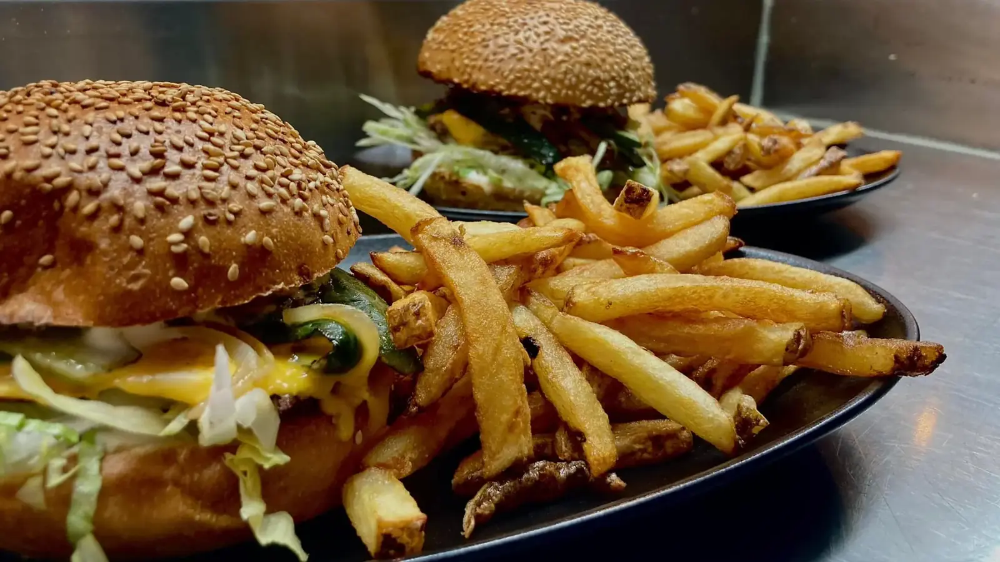
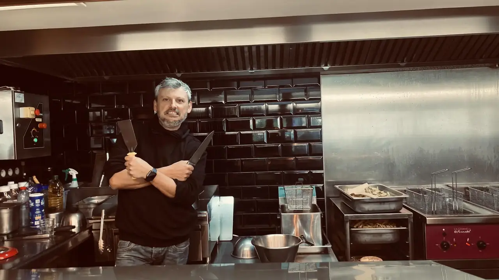
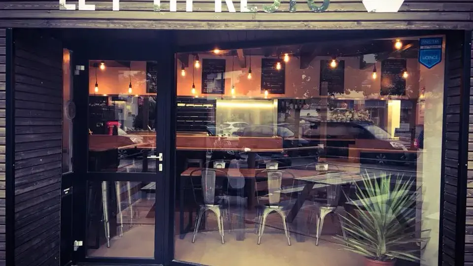
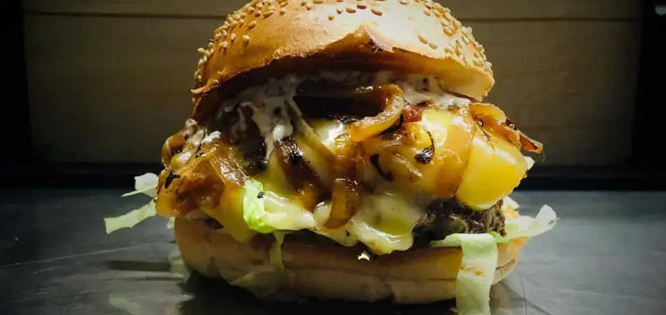
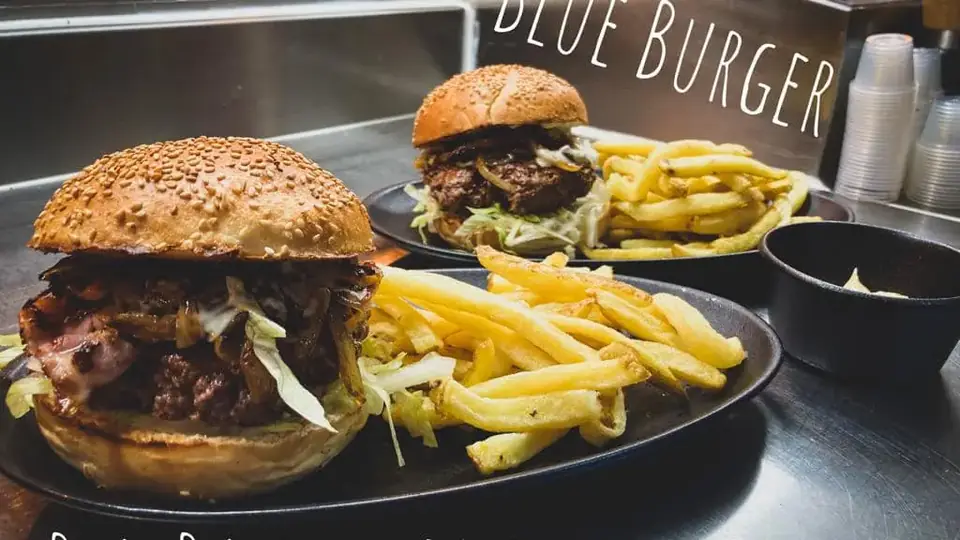
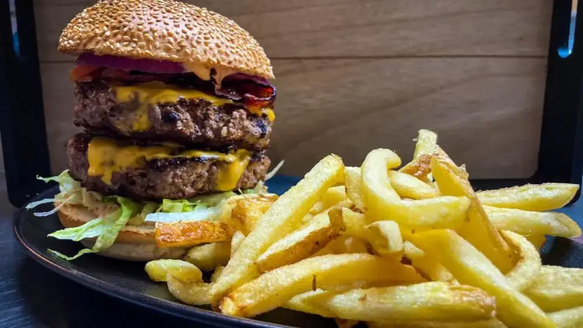
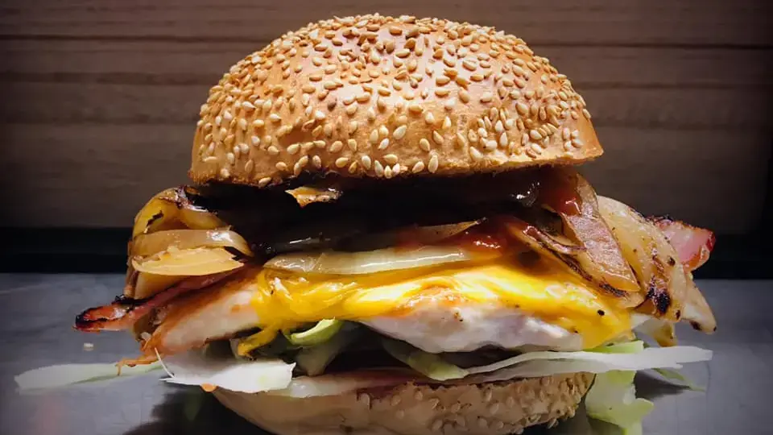
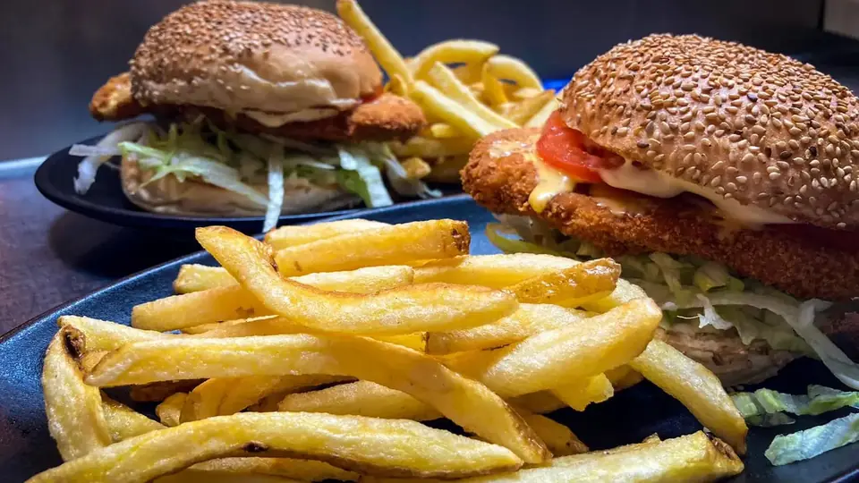
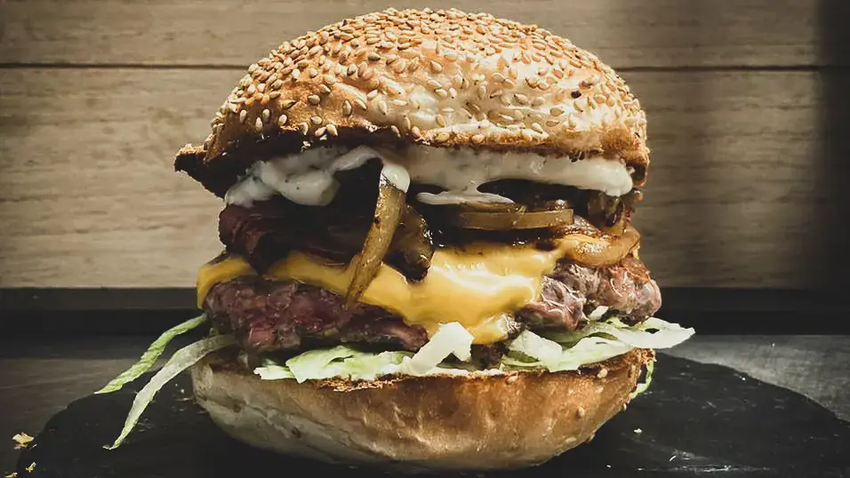
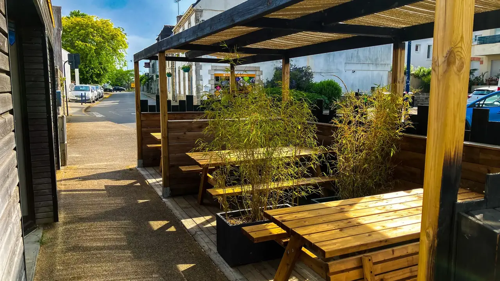

Burgers maison
à Fouesnant
Depuis 2015, on prépare nos burgers avec les produits frais de nos producteurs et éleveurs locaux. Sur place, en terrasse ou à emporter.
Réservation conseillée.
La maison
Du frais, du local, et du fait maison
Le P'tit Resto 29, c'est une petite adresse près du centre de Fouesnant où l'on prend le temps de bien faire : des burgers préparés maison, des produits choisis auprès de producteurs et d'éleveurs du coin, et un accueil simple et chaleureux.
À déguster sur place, en terrasse aux beaux jours, ou à emporter chez vous… ou sur l'une des plus belles plages du Finistère.
- 2015burgers maison depuis
- 36couverts en salle
- 18places en terrasse


La carte
Des burgers pour tout le monde
La carte évolue avec les saisons et les arrivages. Retrouvez-la au restaurant et sur nos réseaux.
-
Burgers maison
Préparés sur place, avec des produits frais et locaux.
-
Pain bio
Nos burgers sont servis dans un pain brioché bio.
-
Sans gluten
Pain sans gluten disponible, en supplément.
-
Végétarien
Un menu végétarien pour celles et ceux qui ne mangent pas de viande.
-
Menu enfant
Un menu pensé pour les plus jeunes. Chaise haute disponible.
-
À emporter
Plats à emporter et click & collect : passez récupérer votre repas.







Sur place
Une terrasse au calme
Aux beaux jours, installez-vous dehors sur notre terrasse en bois, à deux pas du centre et des commerces.
- Terrasse de 18 places
- Wi-Fi
- Chaise haute pour bébé
- Accueil des personnes à mobilité réduite
Infos pratiques
Horaires & accès
Horaires
| Lundi | Fermé |
|---|---|
| Mardi | 12h – 13h30 · 19h – 21h |
| Mercredi | 12h – 13h30 · 19h – 21h |
| Jeudi | 12h – 13h30 · 19h – 21h |
| Vendredi | 12h – 13h30 · 19h – 21h |
| Samedi | Fermé |
| Dimanche | Fermé |
Ouvert toute l'année. En cas de doute, un petit coup de fil.
Adresse
5 rue de Kernévéleck29170 Fouesnant
Près du centre-ville
Réservation
Réservation conseillée.
Paiement
Carte bancaire et espèces.